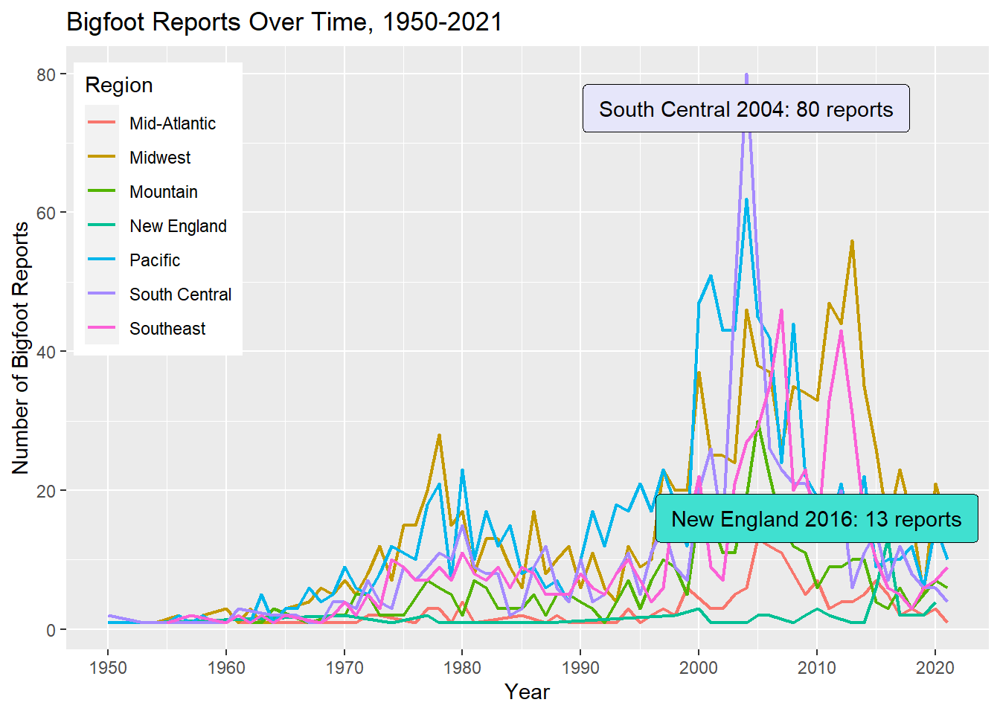

knitr::opts_chunk$set(echo = TRUE, warning=FALSE, message=FALSE)
library(tidyverse)
library(readr)
library(dplyr)
library(lubridate)
bfro <- read_csv("TeresaLardo_FinalProjectData/bfro_reports_geocoded.csv", col_types = cols(index = col_skip(), latitude = col_skip(), longitude = col_skip(), number = col_skip(), geohash = col_skip(), temperature_high = col_skip(), temperature_low = col_skip(), dew_point = col_skip(), cloud_cover = col_skip(), humidity = col_skip(), precip_intensity = col_skip(), precip_probability = col_skip(), precip_type = col_skip(), pressure = col_skip(), summary = col_skip(), uv_index = col_skip(), wind_bearing = col_skip(), wind_speed = col_skip()))
# Mutating new columns for vocalization reports & extract year from date column, rearrange order of columns
bfro <- bfro %>%
mutate(
vocalizations = str_detect(title, "vocalization"),
year = year(date)) %>%
select(state, county, date, year, vocalizations, classification, title, everything())Final Project: Teresa Lardo
final_project
Teresa Lardo
Bigfoot Reports
Bigfoot Reports - Geography, Time, & Atmospheric Conditions
Introduction
In this project, I will analyze a dataset from Bigfoot Field Researchers Organization (BFRO) listing over 5,000 reports of evidence of a creature believed to be Bigfoot. I intend to use this dataset to figure out which conditions are the most conducive for stumbling upon evidence of a Bigfoot-like creature, whether through a visual sighting, an overheard vocalization, a suspicious footprint, or a close encounter.
Which conditions are the most conducive for finding reportable evidence of Bigfoot?
I want to know where and when these events are most likely to happen, and whether or not certain weather conditions correlate strongly to the reports. I will be keeping an eye on reports of vocalizations during my analysis to see if there’s any distinct difference between vocalization versus non-vocalization reports.
The Dataset
This dataset describes just over 5,000 Bigfoot reports within the continental United States (every state except for Hawaii) dated from November 1869 to November 2021. The reports consist of sightings, encounters, vocalizations, and footprints. The data on Bigfoot sightings is largely self-reported, though some of the earlier reports are taken from newspaper stories.
The report data comes from submissions made to BFRO, and supplemental data on weather and environmental conditions were added from Dark Sky API. The geocoded and weather-enhanced dataset I’m using comes courtesy of Tim Renner.
dim(bfro)[1] 5021 13colnames(bfro) [1] "state" "county" "date" "year"
[5] "vocalizations" "classification" "title" "observed"
[9] "location_details" "season" "temperature_mid" "moon_phase"
[13] "visibility" Variables
As there are many variables in the full dataset, a good chunk of columns describing atmospheric conditions were skipped when I read in the CSV file. After removing these variables, the dataset includes:
- descriptions of the circumstances of the encounter,
- the date & season of the encounter,
- the location (including state, county, and details describing the specific location such as “near the summit of Mt. Mitchell” or “north of Highway 285”),
- the title of the report,
- classification of the report (relating to the circumstantial potential for misinterpretation of the observation),
- and environmental conditions for reports with specified dates, including temperature (midpoint), moon phase, and visibility.
- I also created two new columns - one to note whether the report explicitly mentions hearing a vocalization, and one to isolate the year from the original date column. The ‘year’ variable has been created for the sake of a cleaner time series visualization later on.
Regarding classification, Class A denotes a very low potential for misinterpretation, Class B denotes a greater potential for misinterpretation or misidentification such as in the case of sounds heard but no clear view of a creature, and Class C denotes a high potential for inaccuracy due to being a second-hand report or having untraceable sources.
Numeric Variables of Interest
Visibility is one of the numeric variables I want to analyze. Visibility refers to the distance at which light or an object can be clearly discerned, and it is measured in miles, with visibility 10 being the most clear.
summarize(bfro, median_visibility = median(visibility, na.rm = TRUE), mean_visibility = mean(visibility, na.rm = TRUE), min_visibility = min(visibility, na.rm = TRUE), max_visibility = max(visibility, na.rm = TRUE))The high mean and median values of the visibility column indicate that most of the reports in our dataset do not suffer from low visibility issues – at least in the meteorological sense.
I am also interested in looking into the moon phase variable, which is measured from 0.0 to 1.0, describing the point in the moon’s cycle from new moon to new moon. A value of 0 denotes a new moon, 0.5 denotes a full moon, and values closely approaching 1 denote the balsamic moon which leads into the next new moon. Thus, values under 0.5 refer to the waxing phases and values above 0.5 refer to the waning phases of the moon.
summarize(bfro, median_moon_phase = median(moon_phase, na.rm = TRUE), mean_moon_phase = mean(moon_phase, na.rm = TRUE), min_moon_phase = min(moon_phase, na.rm = TRUE), max_moon_phase = max(moon_phase, na.rm = TRUE))The mean and median for the moon phase variable both hover close to the value for a full moon. This suggests that there may be either a strong cluster of activity around the time of the full moon, or that the reports are fairly evenly spread throughout the moon cycle.
The last numeric variable I want to analyze is temperature. The dataset offers three different options for temperature values - the daily high, the low, and a mid value, all measured in degrees Fahrenheit. I will opt to use the temperature mid value.
Analysis Plan
The specific questions I want to answer in my analysis fall into three categories: Where, When, and Weather.
Where?
Which areas of the U.S. have the highest number of Bigfoot reports?
Are any specific states or counties heavily represented in the data?
I will visualize the ‘Where’ topics using horizontal bar charts in order to display state & county “top 10” values sliced from the dataset, and a treemap to display relative amounts of reports at a regional level.
When?
At what points in recent history did Bigfoot reports spike?
What times of year (seasons) are the most & least represented in our Bigfoot report dataset?
I will create a time series chart with separate lines for each region so we can more easily see any regional spikes. To display how each of the four seasons are represented in the dataset, I will create a treemap to better visualize the relative proportions for these 4 parts of the year.
For these ‘When’ topics - as well as the ‘Weather’ topics that follow - I will need to drop any rows in the dataset where the ‘date’ value is NA.
Weather?
Are Bigfoot reports more likely to occur during certain parts of the moon cycle?
Does visibility affect the quality of a report (classification)?
For the ‘Weather’ topics, I will create histograms to visualize distribution for variables like moon phase and temperature.
Where?
Which areas of the United States have the highest number of Bigfoot reports? Are any specific states or counties heavily represented in our dataset?
The dataset already has columns for ‘state’ and ‘county,’ but I’m also interested in looking at the region level. I will create a new variable that sorts each report into a region based on the value in the ‘state’ column. After consulting the internet at length regarding which states fall into which regions, I have sorted the states into regions like so:
| Pacific | Mountain | Midwest | South Central | Southeast | Mid Atlantic | New England |
|---|---|---|---|---|---|---|
California Oregon Washington Alaska |
Nevada Arizona New Mexico Colorado Utah Idaho Montana Wyoming |
Minnesota No. Dakota So. Dakota Iowa Nebraska Kansas Missouri Ohio Wisconsin Michigan Illinois Indiana |
Texas Oklahoma Louisiana Arkansas Kentucky Tennessee Mississippi We. Virginia |
Florida Georgia So. Carolina No. Carolina Virginia Alabama |
Pennsylvania New York New Jersey Delaware Maryland |
Connecticut Rhode Island Massachusetts Vermont New Hampshire Maine |
# Creating separate vectors for each region
Pacific <- c("California", "Oregon", "Washington", "Alaska")
Mountain <- c("Nevada", "Arizona", "New Mexico", "Colorado", "Utah", "Idaho", "Montana", "Wyoming")
Midwest <- c("Minnesota", "North Dakota", "South Dakota", "Iowa", "Nebraska", "Kansas", "Missouri", "Ohio", "Wisconsin", "Michigan", "Illinois", "Indiana")
South_Central <- c("Texas", "Oklahoma", "Louisiana", "Arkansas", "Kentucky", "Tennessee", "Mississippi", "West Virginia")
Southeast <- c("Florida", "Georgia", "South Carolina", "North Carolina", "Virginia", "Alabama")
Mid_Atlantic <- c("Pennsylvania", "New York", "New Jersey", "Delaware", "Maryland")
New_England <- c("Connecticut", "Rhode Island", "Massachusetts", 'Vermont', "New Hampshire", "Maine")
# Mutating new column using the vectors above
bfro <- bfro %>%
mutate(
region = case_when(state %in% Pacific ~ "Pacific",
state %in% Mountain ~ "Mountain",
state %in% Midwest ~ "Midwest",
state %in% South_Central ~ "South Central",
state %in% Southeast ~ "Southeast",
state %in% Mid_Atlantic ~ "Mid-Atlantic",
state %in% New_England ~ "New England"))Let’s see which regions have the most and least Bigfoot reports by making a treemap.
# Package
library(treemapify)
library(RColorBrewer)
# Plot
ggplot(bfro %>%
count(region),
aes(fill = region,
area = n,
label = n)) +
geom_treemap() +
geom_treemap_text(colour = "black",
place = "centre") +
labs(title = "Bigfoot Reports by Region in the Continental US",
subtitle = "Pacific & Midwest Regions lead in Bigfoot Reports",
fill = "Region") +
theme(legend.position = "left") +
scale_fill_brewer(palette = "Pastel1")The treemap of regional Bigfoot reports shows that the Pacific states have the highest number of total Bigfoot reports, with the Midwest following very close behind. Let’s also note that the Midwest region contains more states than any other single region, which could account for its higher number of reports.
New England trails in last, with only 93 reports in the whole dataset.
Let’s look at the top 10 states for Bigfoot reports to see if they fall into the most popular regions.
# Slice top ten states from dataset, create hbar
ggplot(bfro %>%
count(state) %>%
slice_max(n, n=10),
aes(x = state, y = n)) +
geom_bar(stat='identity', color="black", fill="lightgreen") +
labs(x = "State", y = "Total Bigfoot Reports", title = "Top 10 States for Bigfoot Reports", subtitle = "Washington State leads in Bigfoot Reports") +
scale_fill_brewer(palette = "Set1") +
geom_text(aes(label= n), hjust = 1.5, color = "black") +
coord_flip()Washington state has dramatically more reports than the other states in the top 10, and it is in the Pacific region. In fact, 3 of the 4 Pacific states (no Alaska) appear in the top 10. Four Midwest states occupy this top 10. Texas, Florida, and Colorado all act as emissaries from the middling regions of our treemap - South Central, the Southeast, and Mountain regions respectively.
I want to zoom into the county level and see if there are any individual counties that stand out, and if those counties are in the most popular states for Bigfoot reports.
# Slice top 10 county values, create hbar
ggplot(bfro %>%
count(state, county) %>%
slice_max(n, n=10),
aes(x = county, y = n, fill = state)) +
geom_bar(stat="identity", color="black") +
labs(x = "County", y = "Bigfoot Reports", title = "Top 10 U.S. Counties for Bigfoot Reports", fill = "State", subtitle = "Washington counties Pierce & Snohomish lead in Bigfoot reports") +
geom_text(aes(label=n), hjust = 1.5, color = "black") +
scale_fill_brewer(palette = "Pastel1") +
guides(fill = guide_legend(reverse = TRUE)) +
coord_flip()With Pierce County and Snohomish lead the pack, Washington counties dominate the top 10 list for Bigfoot reports. Three counties from another Top 10 state from the Pacific region hold spots here, and the odd one out is Arizona’s Coconino County.
When?
Now we need to cull any rows from our dataset that do not have date information. Because the information on atmospheric conditions from Dark Sky API is based on reports listing a specific date, our Weather analyses later will also benefit from dropping any untimed observations. Dropping NA values in the date column will shrink our dataset from just over 5,000 observations to just over 4,000.
# Remove rows where 'date' value is NA
bfro <- bfro %>%
drop_na(date)Now that our dataset has been narrowed down to only reports associated with specific dates, we can create a time series to see any spikes in report activity. We can also color-code the time series by region to see if the number of reports suddenly went up in a particular part of the country. The earliest report in our dataset is from 1869, but there are only 14 reports total before 1950, so I’m going to begin my time series at 1950.
# Create time series chart from 1950, color-coded by region
ggplot(bfro %>%
filter(year > 1949) %>%
group_by(region) %>%
count(year),
aes(x=year, y=n, group=region, color=region)) +
geom_line(size=0.75) +
labs(x="Year", y="Number of Bigfoot Reports", title="Bigfoot Reports Over Time, 1950-2021", color="Region") +
geom_label(
label="South Central 2004: 80 reports",
x=2004,
y=75,
label.padding = unit(0.55, "lines"),
label.size = 0.35,
color = "black",
fill = "lavender"
) +
geom_label(
label="New England 2016: 13 reports",
x=2010,
y=16,
label.padding = unit(0.55, "lines"),
label.size = 0.35,
color = "black",
fill = "turquoise"
) +
theme(legend.position = c(.1, .73)) +
scale_x_continuous(n.breaks=10)
This time series shows a modest spike in reports during the late 1970s in all regions, and a particularly high spike for most regions in 2004. The year 2013 also looks a bit exciting for the Midwest and the Southeast. Reports appear to have dipped everywhere in the last 10 years, with the exception of New England showing a rare spike in 2016.
Now that I have a sense of more historical trends, I would like to look at when during the year Bigfoot sightings tend to happen.
# Create treemap of seasons, filtering out where season is "Unknown"
ggplot(bfro %>%
filter(season != "Unknown") %>%
count(season),
aes(fill = season,
area = n,
label = n)) +
geom_treemap() +
geom_treemap_text(colour = "black",
place = "centre") +
labs(title = "Bigfoot Reports by Season",
subtitle = "Reports of Bigfoot are most popular in the summer & fall",
fill = "Season") +
theme(legend.position = "left") +
scale_fill_brewer(palette = "Pastel1")
Our treemap shows that summer is the most popular season for these Bigfoot reports. This is unsurprising, since people tend to be outdoors in nature more often during the summer. The least number of reports occur during the winter, which makes sense because in many areas of the country, people will typically opt to stay inside unless absolutely necessary during that season.
Weather?
Does Bigfoot howl at the moon?
To explore the question of moon phase correspondence, I can create a basic histogram. I want to see if reports that feature vocalizations are any different in this regard compared to reports without vocalizations, so we’ll distinguish the two types of reports by color.
ggplot(bfro, aes(x=moon_phase, fill=vocalizations)) +
geom_histogram(color='black', alpha=0.6, position = 'identity', binwidth = 0.05, stat = 'bin') +
scale_fill_manual(values=c("orange", "darkviolet")) +
labs(fill="Vocalizations", y = "Bigfoot Reports", x = "Moon Phase between New Moons") +
ggtitle("Bigfoot Reports over the Moon Cycle") 
The histogram indicates that markedly fewer Bigfoot sightings occur around the time of the new moon, but the number of Bigfoot reports fluctuate only mildly during the rest of the moon cycle. Modest high points during the moon cycle appear to be during the waxing crescent phase and the waxing gibbous phase just before the full moon. There’s a quick spike during the waning gibbous phase following the full moon, and a last blast of activity just before the moon turns dark again. The only clear trend this histogram indicates is that reports fall when the moon is dark.
The vocalization reports seem to hold fairly stable during the waning phase of the moon and show slightly more fluctuation during the waxing phase. There seem to be a slight preference for the waxing half of the moon cycle from this chart.
The dataset includes a classification variable describing each report as Class A, B, or C. These Class ratings correspond to the potential for misinterpretation of what has been observed. Class A denotes a very low potential for misinterpretation, and Class B denotes a greater potential for misinterpretation (such as sounds heard but no clear view of a creature). Class C has the highest potential for inaccuracy and is the default classification for second-hand reports, so I’m going to eliminate those reports.
I want to see if the visibility on the day of the sighting has a notable correlation with the classification of the report. I would assume a report is more likely to be Class B on days with lower visibility. Let’s create a violin plot to show the density of each classification in terms of visibility.
On the visibility scale, 1 denotes dense fog, 5 denotes thin fog, 8 denotes clear, and 10 denotes exceptionally clear.
ggplot(bfro %>%
filter(classification == "Class A" | classification == "Class B"), aes(x=classification, y=visibility, fill=classification)) +
geom_violin() +
scale_fill_manual(values=c("orange", "darkviolet")) +
labs(fill="Classification", y = "Visibility", x = "Report Classification") +
ggtitle("Visibility & Classification of Bigfoot Reports") This violin plot shows an almost hilarious similarity between the two classifications - an overwhelming amount of both Class A and Class B reports described sightings or other encounters that occurred during days with high visibility. When we look at the plot below Visibility 5, Class B reports appear to have slightly more lower visibility reports than Class A, but it’s slight.
I’d like to make a histogram to see where reports tend to fall in terms of daily temperature. The dataset includes high and low temperatures, but also a midpoint temperature. I am opting to use the temperature_mid variable. I will also include a color distinction between reports that specify vocalizations versus those that do not.
ggplot(bfro, aes(x=temperature_mid, fill=vocalizations)) +
geom_histogram(color='black', alpha=0.6, position = 'identity') +
scale_fill_manual(values=c("orange", "darkviolet")) +
labs(fill="Vocalizations", y = "Bigfoot Reports", x = "Temperature in Fahrenheit") +
ggtitle("Temperature (mid) during Bigfoot Sightings") The histogram shows that our Bigfoot reports spike when the temperature is in the low-to-mid 60s. The temperatures associated with the majority of the reports will, of course, also correspond to the temperatures at which people are more likely to be out and about in nature. There does not seem to be much deviation between reports with vocalizations and reports without.
Conclusions
After creating my visualizations for Where, When, and Weather, I conclude that the best way to come across evidence for a creature believed to be Bigfoot is to venture out with a light jacket on a clear day in Washington State while the moon is waxing. (Disclaimer: I do not advocate seeking out mysterious woodland primates.) The ‘Where’ visualizations strongly reinforced Washington state as a key location for Bigfoot reports. The preference shown for waxing moon phases is relatively minor.
Further analysis could examine more weather conditions from the original version of the dataset. The exploratory analysis I conducted with the other weather conditions during earlier stages of this project did not point me toward any particularly meaningful trends – just as the 3 atmospheric variables I selected for this project did not point toward strong trends.
A major limitation of this dataset and my analyses is the fact that the existence of a quality report requires the presence of an observer. Each of my 3 W’s is impacted by this: humans are generally more likely to enter Bigfoot-friendly environs during certain times of year and under certain weather conditions (i.e., not dangerously hot or dangerously cold temperatures, and not in dense fog). Sightings would also be more likely in places where there are large expanses of woodland in close proximity to a large population center, because if more people are able to access to such an environment, there are more opportunities for a pair of eyes to catch sight of something strange. The county with the most Bigfoot reports - Pierce County, Washington - fits that description, as the county is 1) home to the city of Tacoma, 2) roughly an hour’s drive south of Seattle, and 3) the site of Mount Rainer National Park.
Bibliography
R Core Team (2022). R: A language and environment for statistical computer. R Foundation for Statistical Computing, Vienna, Austria. URL https://www.R-project.org/.
Renner, Tim. “Bigfoot Sightings.” data.world, https://data.world/timothyrenner/bfro-sightings-data.
Bigfoot Field Researchers Organization, www.bfro.net/. Accessed 12 Apr. 2023.